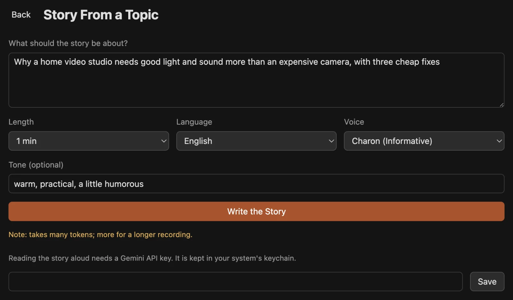

Story from a topic
No recording? Describe a topic, and Kilnframe writes a story about it, reads it aloud and opens it as a project to dress with animations and captions.

Write it
- Open itIn the Start Window, press Make a Story From a Topic.
- Describe itWhat should the story be about?
- Set it upLength, Language, Voice and Tone (optional).
- Write itWrite the Story: your AI model writes it.
Change it
Read it and edit it in place. Or write What should change? and press Write It Again. Previous Version goes back to the one before.
Read it aloud
Read It Aloud has it read by the voice you chose, and opens it as a new project. Reading it aloud needs a Gemini API key, kept in your system's keychain. From there it is a recording like any other: animations, captions, music and export.